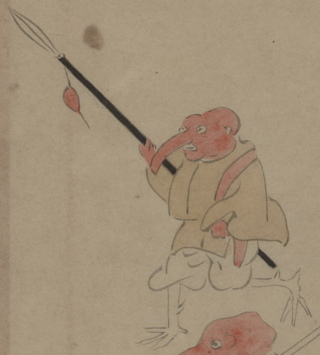

赤い面をかぶった化物。面は頭部をすっぽり覆い、長い鼻がついたもので、伎楽の治道面を思わせる。黄色の衣と白い袴を着て、赤い飾りのついた鉾を持ち、歩いている。袖から覗く手は赤く、脚は鳥のようである。
出典：親書誌：U426_nichibunken_0150：付喪神絵詞；ツクモガミエコトバ／日付：2010／資源識別子：U426_nichibunken_0150_0066_0000
Copyright (c)2010- International Research Center for Japanese Studies, Kyoto, Japan. All rights reserved.